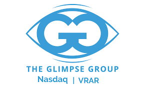

A continuación podrás escuchar un audio con algunos datos interesantes sobre este tema.
Mark Zuckerberg adelantó en la última conferencia anual de Facebook Connect: «El objetivo es tener avatares
realistas que creen la sensación de que estamos presentes». Con el objetivo de avanzar en este plan, la compañía
ha presentado sus nuevos avatares virtuales en 3D en todas sus aplicaciones: Facebook, Instagram y Messenger.
Las empresas más interesadas en el metaverso son las siguientes:
| Posición | Empresa | Logo | Creador |
| 1 | Meta | Mark Zuckerberg | |
| 2 | Nvidia |

|
Jen-Hsun Huang |
| 3 | Roblox |

|
David Baszucki |
| 4 | Kopin | Dr. John CC Fa | |
| 5 | Vuzix | Grant Russell | |
| 6 | Glimpse |  | Javier Moraga |
| 7 | Wimi | Cheng Wei Yi | |
| Posición | Empresa | Logo | Creador |